隅見動物
自然2030計畫
IUCN 紅皮書
國家代表動物
新聞與事件
聯絡我們
國家代表動物
Top
地區
北美
墨西哥、中美洲及加勒比地區
南美洲
歐洲
地中海
東部和南部非洲
西非和中非
東歐與中亞
西亞
亞洲
大洋洲
北美
美洲野牛
Bison bison
白頭海鷗
Haliaeetus leucocephalus
美國
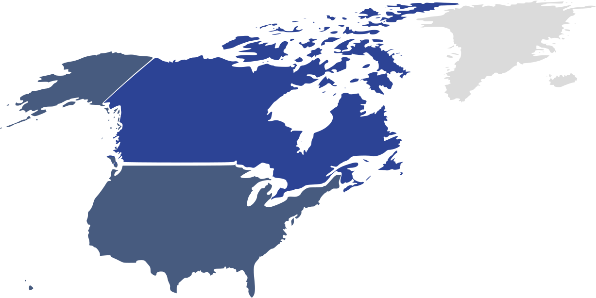
美洲河狸
Castor canadensis
加拿大馬
Equus ferus caballus
加拿大
墨西哥、中美洲及加勒比地區
金鵰
Aquila chrysaetos
墨西哥無毛犬
Canis familiaris
美洲豹
Panthera onca
墨西哥蝗蟲
Sphenarium purpurascens
小頭鼠海豚
Phocoena sinus
墨西哥
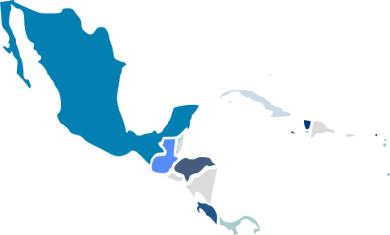
中美貘
Tapirus bairdii
彩虹巨嘴鳥
Ramphastos sulfuratus
貝里斯
粘土色鶇
Turdus grayi
白尾鹿
Odocoileus virginianus
西印度海牛
Trichechus manatus
哥斯大黎加
古巴咬鵑
Priotelus temnurus
古巴
鳴哀鴿
Zenaida aurita
安圭拉
黇鹿
Dama dama
麗色軍艦鳥
Fregata magnificens
玳瑁
Eretmochelys imbricata
安地卡及巴布達
聖芬生鸚鵡
Amazona guildingii
聖文森及格瑞那丁
紅嘴長尾蜂鳥
Trochilus polytmus
牙買加
角鵰
Harpia harpyja
巴拿馬
白尾鹿
Odocoileus virginianus
宏都拉斯
鳳尾綠咬鵑
Pharomachrus mocinno
瓜地馬拉
伊斯帕尼奧拉咬鵑
Priotelus roseigaster
海地
南美洲
棕腹鶇
Turdus rufiventris
巴西
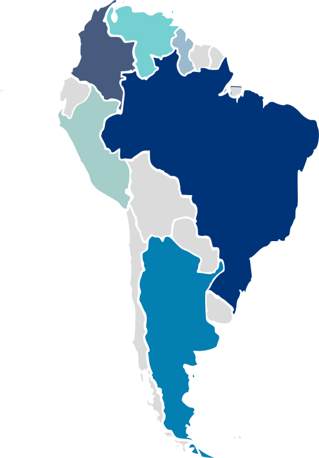
美洲豹
Panthera onca
蓋亞那
小羊駝
Vicugna vicugna
秘魯
擬黃鸝
Icterus icterus
委內瑞拉
棕灶鳥
Furnarius rufus
阿根廷
安地斯神鷹
Vultur gryphus
哥倫比亞
歐洲
歐亞猞猁
Lynx lynx
羅馬尼亞
獅
Panthera leo
盧森堡
家燕
Hirundo rustica
奧地利
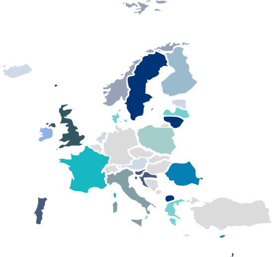
高盧雄雞
Gallus gallus domesticus
法國
鬥牛犬
Canis familiaris
獅
Panthera leo
紅鳶
Milvus milvus
英國
駝鹿
Alces alces
烏鶇
Turdus merula
瑞典
伊比利亞狼
Canis lupus signatus
葡萄牙
白尾海鵰
Haliaeetus albicilla
白鸛
Ciconia ciconia
歐洲野牛
Bison bonasus
波蘭
獅
Panthera leo
白喉河烏
Cinclus cinclus
挪威峽灣馬
Equus ferus caballus
挪威
獅
Panthera leo
黑尾鷸
Limosa limosa
荷蘭
白鸛
Ciconia ciconia
立陶宛
白鶺鴒
Motacilla alba
二星瓢蟲
Adalia bipunctata
拉脫維亞
義大利狼
Canis lupus italicus
義大利
戴勝
Upupa epops
以色列
歐洲馬鹿
Cervus elaphus
愛爾蘭
海東青
Falco rusticolus
冰島
真海豚
Delphinus delphis
希臘
棕熊
Ursus arctos
黃嘴天鵝
Cygnus cygnus
琉璃灰蝶
Celastrina argiolus
河鱸
Perca fluviatilis
七星瓢蟲
Coccinella septempunctata
芬蘭
歐亞紅松鼠
Sciurus vulgaris
疣鼻天鵝
Cygnus olor
蕁麻蛺蝶
Aglais urticae
丹麥
獅
Panthera leo
保加利亞
狼
Canis lupus
愛沙尼亞
松貂
Martes martes
克羅埃西亞
賽普勒斯盤羊
Ovis orientalis
賽普勒斯
蠣鴴
Haematopus ostralgus
法羅群島
地中海
法老王獵犬
Canis familiaris
馬爾他
耳廓狐
Vulpes zerda
阿爾及利亞
草原鵰
Aquila nipalensis
埃及
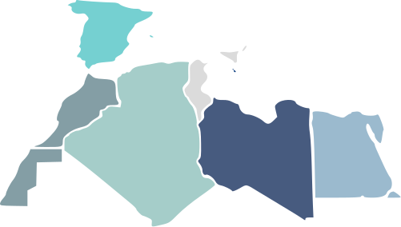
獅
Panthera leo
利比亞
西班牙鬥牛
Bos taurus
西班牙
獅
Panthera leo
摩洛哥
東部和南部非洲
渡渡鳥
Raphus cucullatus
模里西斯
豹
Panthera pardus
索馬利亞
灰冠鶴
Balearica regulorum
烏干達
黑馬羚
Hippotragus niger
吼海鵰
Haliaeetus vocifer
辛巴威
紅冠蕉鵑
Tauraco erythrolophus
安哥拉
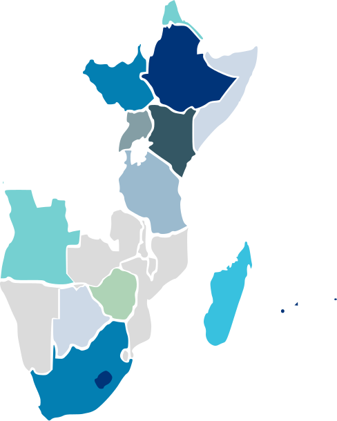
跳羚
Antidorcas marsupialis
藍鶴
Anthropoides paradiseus
安哥拉雙帆魚
Dichistius capensis
南非
吼海鵰
Haliaeetus vocifer
南蘇丹
瘤牛
Bos primigenius indicus
環尾狐猴
Lemur catta
馬達加斯加
努比亞長頸鹿
Giraffa camelopardalis
坦尚尼亞
獅
Panthera leo
肯尼亞
獅
Panthera leo
衣索比亞
平原斑馬
Equus quagga
波札那
單峰駱駝
Camelus dromedarius
厄利垂亞
西非和中非
鷹
Accipitridae
黑冕鶴
Balearica pavonina
奈及利亞
豹
Panthera pardus
盧安達
㺢㹢狓
Okapia johnstoni
剛果民主共和國
黑豹
Panthera pardus
加彭
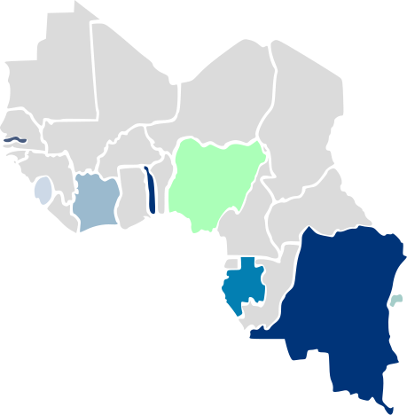
獅
Panthera leo
多哥
非洲象
Loxodonta
象牙海岸
斑鬣狗
Crocuta crocuta
甘比亞
獅
Panthera leo
獅子山
東歐與中亞
鷹
Accipitridae
阿爾巴尼亞
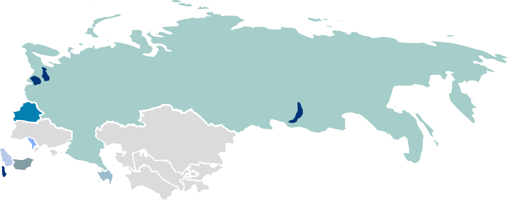
歐洲野牛
Bison bonasus
白俄羅斯
原牛
Bos primigenius
摩爾多瓦
獅
Panthera leo
北馬其頓
歐洲棕熊
Ursus arctos arctos
俄羅斯
歐亞狼
Canis lupus lupus
歐亞猞猁
Lynx lynx
塞爾維亞
卡拉巴赫馬
Equus ferus caballus
亞塞拜然
西亞
雪豹
Panthera uncia
阿富汗
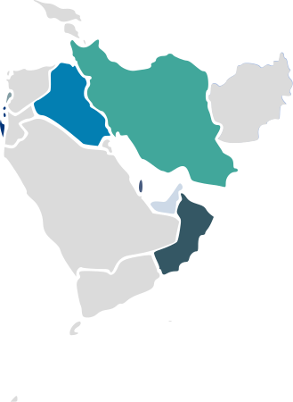
條紋鬣狗
Hyaena hyaena
黎巴嫩
亞洲獅
Panthera leo persica
波斯豹
Panthera pardus saxicolor
伊朗
石雞
Alectoris chukar
野山羊
Capra aegagrus
伊拉克
阿拉伯大羚羊
Oryx leucoryx
卡達
阿拉伯大羚羊
Oryx leucoryx
阿曼
巴勒斯坦太陽鳥
Cinnyris osea
巴勒斯坦
阿拉伯大羚羊
Oryx leucoryx
游隼
Falco peregrinus
阿聯
亞洲
食猿鵰
Pithecophaga jefferyi
菲律賓
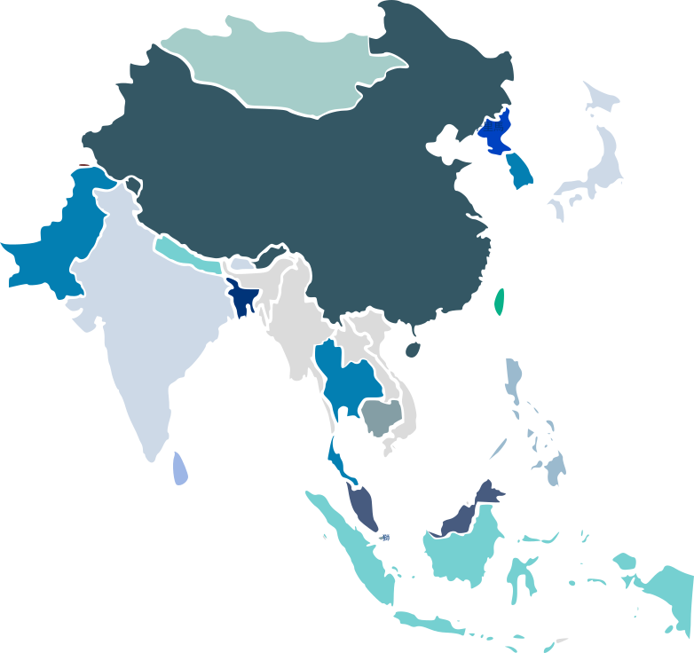
獅
Panthera leo
黑尾原雞
Gallus lafayettii
斯里蘭卡
獅
Panthera leo
新加坡
亞洲象
Elephas maximus
泰國鬥魚
Betta splendens
泰國
綠雉
Phasianus versicolor
錦鯉
Cyprinus carpio haematopterus
日本
孟加拉虎
Panthera tigris tigris
印度象
Elephas maximus indicus
恆河豚
Platanista gangetica gangetica
藍孔雀
Pavo cristatus
印度
貓熊
Ailuropoda melanoleuca
丹頂鶴
Grus japonensis
中國
林牛
Bos sauveli
大䴉
Pseudibis gigantea
潮龜
Batagur baska
巨暹羅鯉
Catlocarpio siamensis
柬埔寨
羚牛
Budorcas taxicolor
不丹
孟加拉虎
Panthera tigris tigris
鵲鴝
Copsychus saularis
雲鰣
Tenualosa ilisha
孟加拉
科摩多巨蜥
Varanus komodoensis
印度尼西亞
捻角山羊
Capra falconeri
恆河豚
Platanista indicus minor
石雞
Alectoris chukar
沼澤鱷
Crocodylus palustris
遊隼
Falco peregrinus peregrinator
雪豹
Panthera uncia
巴基斯坦
西伯利亞虎
Panthera tigris altaica
南韓
馬來亞虎
Panthera tigris jacksoni
馬來西亞
瘤牛
Bos taurus indicus
棕尾虹雉
Lophophorus impejanus
尼泊爾
大洋洲
紅大袋鼠
Macropus rufus
鴯鶓
Dromaius novaehollandiae
澳洲
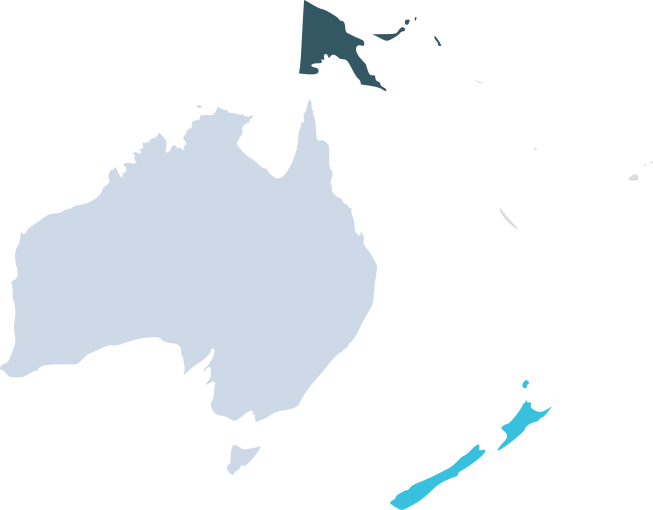
奇異鳥
Apteryx sp.
紐西蘭
儒艮
Dugong dugon
巴布亞紐幾內亞
南極洲
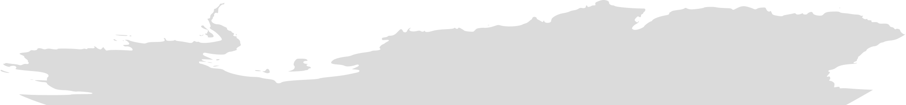
I
index
N
Nature
2030
R
Red List
N
News
S
State Animals